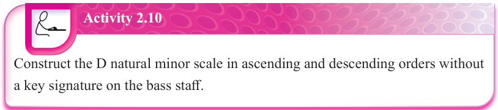

Construct the D natural minor scale in ascending and descending orders without a key signature on the bass staff.
E natural minor scale
You need to arrange a series of eight notes starting from the first note, which is E, to construct the E natural minor scale. Follow the pattern for constructing natural minor scales, which is T-S-T-T-S-T-T. The following are the steps that can be followed when constructing an E natural minor scale:
(a) Step 1: Write a series of eight notes from note E.
E-F-G-A-B-C-D-E
(b) Step 2: Count the steps between the notes while following the pattern T-S-T-T-S-T-T as follows:
(i) From note E to F = Semitone; however, since the pattern for natural minor scales requires you to count the whole step or tone (T), you should increase the distance between note E and F. This can be done by raising note F using a sharp (#) sign to get the whole step or tone. Therefore, you will count from note E to F♯ = Tone (T).
(ii) From note F♯ to G = Semitone (S)
(iii) From note G to A = Tone (T)
(iv) From note A to B = Tone (T)
(v) From note B to C = Semitone (S)
(vi) From note C to D = Tone (T)
(vii) From note D to E = Tone (T)
The order of the E natural minor scale obtained is E-F♯-G-A-B-C-D-E. Figures 2.41, 2.42 and 2.43 show the E natural minor scale constructed on a piano and staff.